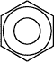
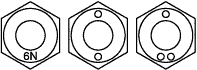
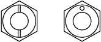
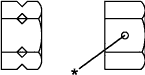
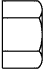
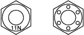

СТАНДАРТНЫЕ БОЛТЫ > ОПРЕДЕЛЕНИЕ КЛАССА ПРОЧНОСТИ ГАЕК |
| Современная стандартная шестигранная гайка | Стандартная шестигранная гайка старого образца | Класс | |
| Штампованная гайка | Точеная гайка | ||
|  Без метки | - | - | 4N |
Без метки (с шайбой) | Без метки (с шайбой) | Без метки | 5N (4T) |
|  | - | - | 6N |
| - |  |  | 7N (5T) |
| - | - | 8N | |
|  Без метки | 10N (7T) | ||
|  | - | - | 11N |
 | - | - | 12N |